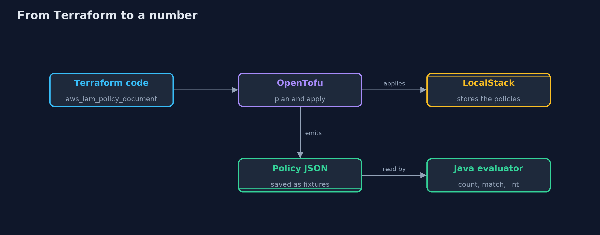
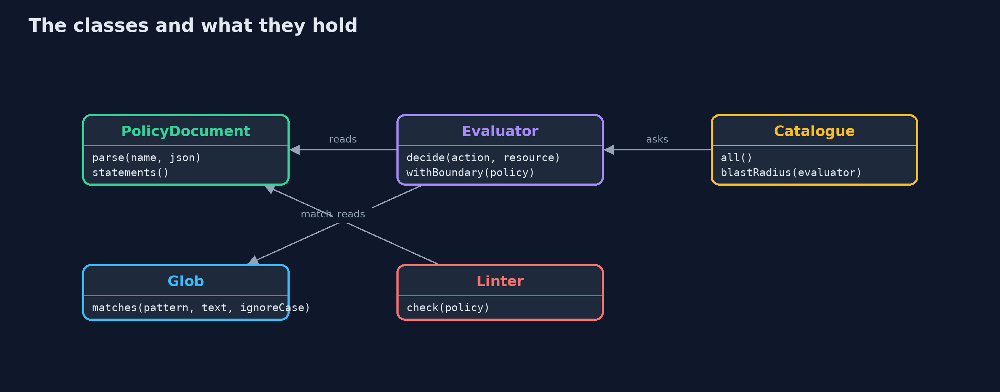
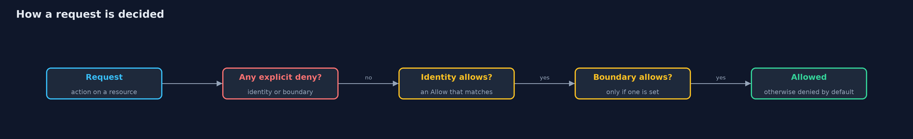
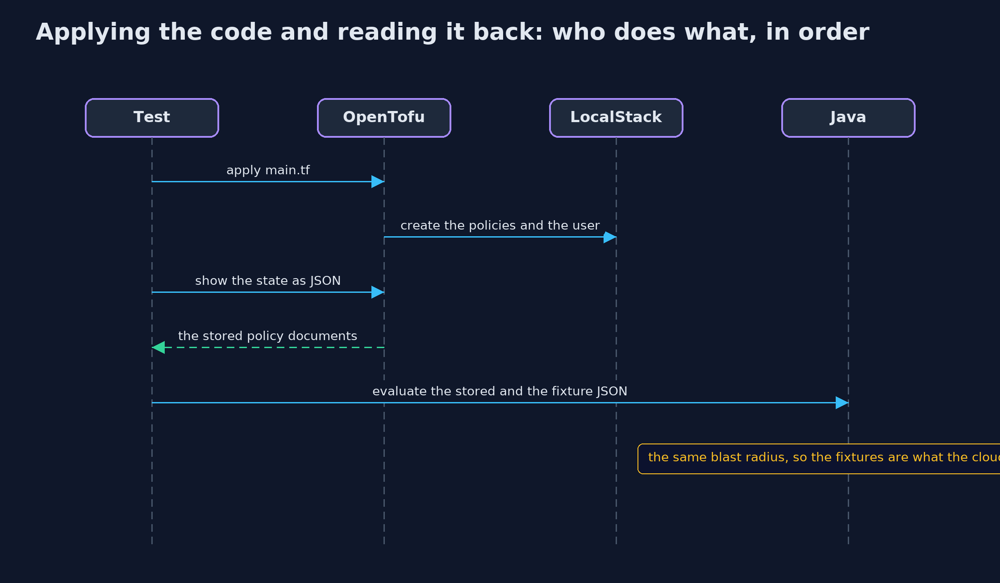

Least Privilege with Terraform and LocalStack
src/main/java/com/jk/explore/security/leastprivilegetf/
├── Catalogue.java The fixed list of (action, resource) pairs the online store's account offers
├── Evaluator.java AWS-style evaluation for one identity: an explicit Deny in any policy wins; otherwise the request needs an Allow in the identity's policies and, if a permissions boundary is set, an Allow in the boundary too; otherwise it is denied by default
├── Fixtures.java The five policy documents the Terraform code in infra/terraform writes, saved as the JSON that OpenTofu emitted for them
├── Glob.java IAM-style wildcard matching: ` ` matches any run of characters (including none) and `?` matches exactly one
├── LeastPrivilegeTerraformDemo.java Runs the online store story in five numbered acts and prints exact, repeatable results
├── Linter.java Reads the text of a policy, not its effect, and flags the shapes that go wrong: wildcards, NotAction and ways to grow one's own power
├── PolicyDocument.java An IAM policy document as the Terraform data source `aws_iam_policy_document` writes it
└── PolicyNames.java The policies the Terraform code defines, in the order the lesson uses them
Write permissions as infrastructure code so that they can be read, counted and linted before they are applied: scope each policy, let an explicit deny and a boundary narrow it further, and watch for the shapes that quietly grant more power.
In a cloud account, permissions are written as policies: JSON documents that list which actions (such as s3:GetObject) may be done on which resources (such as one bucket). Tools such as Terraform and its open-source fork OpenTofu let you
write those policies as code, review them in a pull request and apply them in one step. Because they are code, they can also be read by a program. This project writes five policies in Terraform for an online store, applies them with OpenTofu to a local AWS emulator
(LocalStack in Docker, so no cloud account), and reads the same JSON back in Java, where an evaluator follows AWS's rules: deny by default, an explicit deny always wins, and a permissions boundary limits what any policy can grant.
The demo counts each identity's blast radius, how many of 25 things it could do if its key were stolen, and a linter reads the text of a policy for wildcards and for ways to grow one's own power.
The idea in everyday terms
Think of a key cabinet in the shop. The nightly export gets a key to one drawer and not the master key. A note on the cabinet says "nobody takes the key to the safe", and that note beats any other permission slip. A sign on the staff door says "visitors may go no further than the shop floor, whatever slip they hold". The notes are written down in a book anyone can read, so before a key is handed out, someone can count which doors it opens.
The scenario
An online store's account has 25 things that can be done: reading and writing reports, querying orders and customers, changing who may do what, decrypting with a key, and deploying a function. The demo writes five policies, from a wildcard shortcut to a scoped export role, and counts, matches and lints them.
Run
./gradlew run
The demo tells the story in 5 acts, each printing exact numbers that the tests check:
| Act | What it shows |
|---|---|
| 1. Policies written as code | The account offers 25 things to do; the wildcard policy allows all 25, the nightly export needs 3, and a deploy policy that looks small also allows 3. |
| 2. How a request is matched | The exporter may read a report file and list the reports bucket, but not the secret file, and not the bucket as if it were a file; action names ignore case, and anything not allowed is denied. |
| 3. A deny beats every allow | Admin with a deny on secrets can do 20 of 25 against 25 without it; the secret file is explicitly denied, and the order of statements does not matter. |
| 4. A permissions boundary | The wildcard policy alone allows 25 of 25 and under the boundary 8 of 25; the boundary alone grants 0; admin with a deny under the boundary is also 8. |
| 5. A linter, and the way to more power | The linter flags the wildcard policies and finds iam:PassRole on every role in the deployer policy, which counts as only 3 of 25 and is still dangerous. |
Test
./gradlew test
25 tests in DemoRunsTest, EvaluatorTest, FixturesAndLinterTest, GlobTest, TerraformInteropTest. The demo reads fixtures, so it needs only a JDK. The integration tests (tagged terraform) start a LocalStack container, apply the Terraform code with OpenTofu, and compare the stored policies with the fixtures the Java evaluator uses; the container is always removed.
What the simulation got right, and what it left out
The five policies are the JSON that OpenTofu emitted when it applied the Terraform code in infra/terraform, saved as fixtures, so the demo needs no tool and prints the same on every run. The integration tests start LocalStack in Docker, apply the code with OpenTofu,
and check that what the emulator stores equals the fixtures. The emulator is local, with test credentials, and is always removed afterwards.
Technologies and versions
Every version below is pinned in the project's build files and was the latest stable release when the project was built.
| Technology | Version | Used for |
|---|---|---|
| Java | 25 | the language and runtime; a Gradle toolchain finds or downloads the JDK |
| Gradle | 9.8.1 (wrapper) | build and run; nothing to install, the wrapper downloads it |
| tools.jackson.core:jackson-databind | 3.2.3 | library the code uses |
| org.junit.jupiter:junit-jupiter | 6.1.3, set by junit-bom | JUnit 5: the tests (tests only) |
| org.junit.platform:junit-platform-launcher | 6.1.3, set by junit-bom | JUnit platform launcher, which Gradle needs to run the tests (tests only) |
| OpenTofu | 1.13.1 | applies the Terraform code in the integration tests; Terraform itself also works and is used if OpenTofu is missing |
| Terraform AWS provider | 6.69.1 | talks to the emulator's IAM service |
| LocalStack (community image) | 4.14.0 | a local AWS emulator in Docker; the last community tag that starts without an account token |
| Docker | required for the integration tests | runs the emulator |
| videokit | repository tool (tools/videokit) |
the narrated video and animation: Piper en_US-amy-medium, speed 0.8, longer pauses (the amy-slow voice) |
Learning Material
| Document | What it is for |
|---|---|
| Dependencies | what the framework and infrastructure are, and why they are here |
| Problem statement | the situation and what the project must show |
| Prerequisites | what you need to know first |
| Least Privilege with Terraform and LocalStack, explained | the acts in prose |
| Session guide | a one-hour lesson with exercises |
| Animated walkthrough | the acts step by step, narrated |
| Threat model | what is protected, who could harm it, and how, using STRIDE |
| Spec | what this project must be true of |
| Expected output | the golden demo output every test and every port checks against |
The idea in one picture
The same policy JSON is stored by the emulator and read by the Java evaluator.

Where each piece sits
PolicyDocument reads the JSON, Evaluator decides, Catalogue counts and Linter reads the text.

How the data moves
A deny anywhere wins; otherwise the identity and the boundary must both allow.

Who calls whom, in order

Video
video/least-privilege-with-terraform-explained.mp4 (with .m4a audio and .srt subtitles) is built by video/build_video.sh. Rendered media is not committed.
What it costs
- The emulator does not enforce the policies. The free LocalStack image stores IAM policies but does not enforce them, so the Java evaluator is checked against what Terraform writes and the emulator stores, and not against a real denial. Enforcement needs a real account or a paid emulator.
- The evaluator is a model. It handles actions, resources, deny, boundaries and NotAction, and refuses conditions. Real AWS also has resource policies, organisation rules, session policies and conditions.
- Counting hides escalation. An identity with a small count can still be dangerous, such as one that may pass any role to a new function, so the policy has to be read as well as counted.
- Code review only helps if someone reviews. Policies as code make the review possible, not automatic.
When this is too much
For a personal project, one or two scoped policies are enough. In a team, writing every permission as code and linting it in the pipeline is cheap and catches the common mistakes before they reach an account.
Where you have already met this
aws_iam_policy_documentandaws_iam_policyin Terraform repositories.- IAM Access Analyzer and "policy validation" findings in cloud consoles.
"Action": "*"and"Resource": "*"in blog posts, and in breach reports.- Terraform plans reviewed in pull requests.
Where this sits
This project follows least-privilege, least-privilege-with-spring-security and least-privilege-with-kubernetes-rbac, and is the last in safe-habits for least privilege.